Meus projetos
- 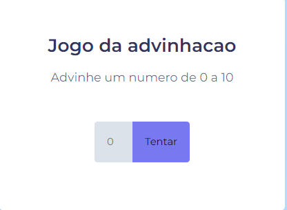Jogo da Advinhacao
-
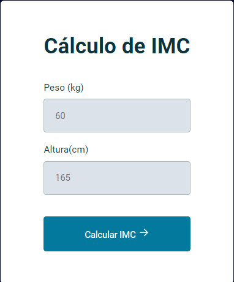Indice de massa corporal
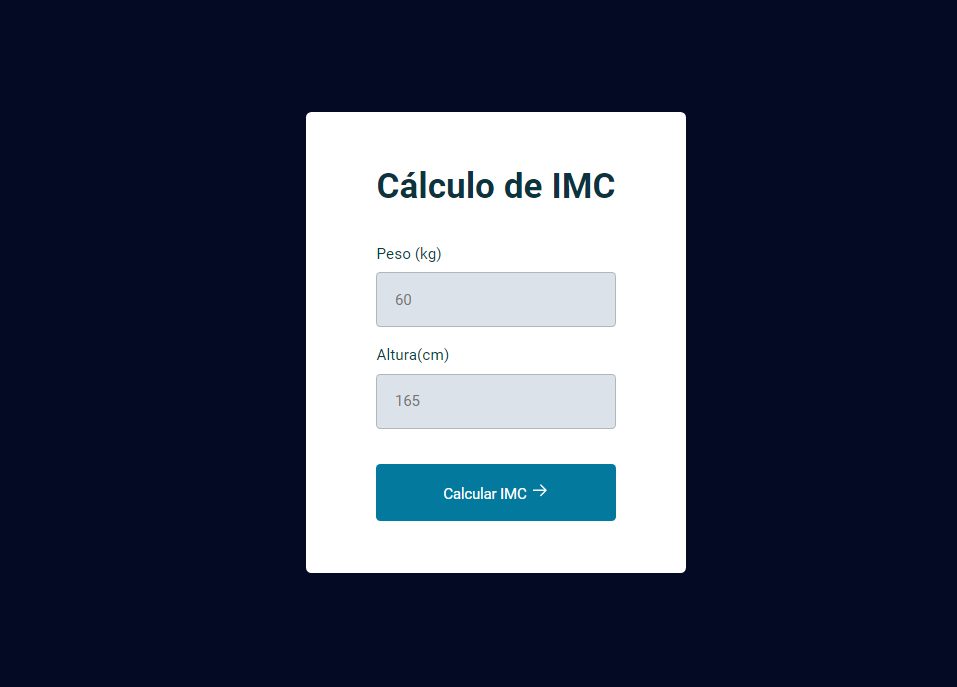
Projeto de Indice de massa corporal
A "Calculadora de IMC" é uma ferramenta simples e útil que permite aos usuários calcular seu Índice de Massa Corporal (IMC) de forma rápida e conveniente. O IMC é uma medida amplamente aceita que ajuda a avaliar se uma pessoa está dentro de uma faixa saudável de peso em relação à sua altura.
-
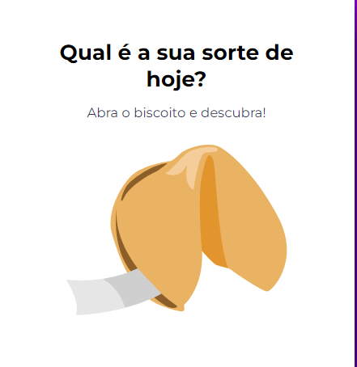Biscoito da sorte
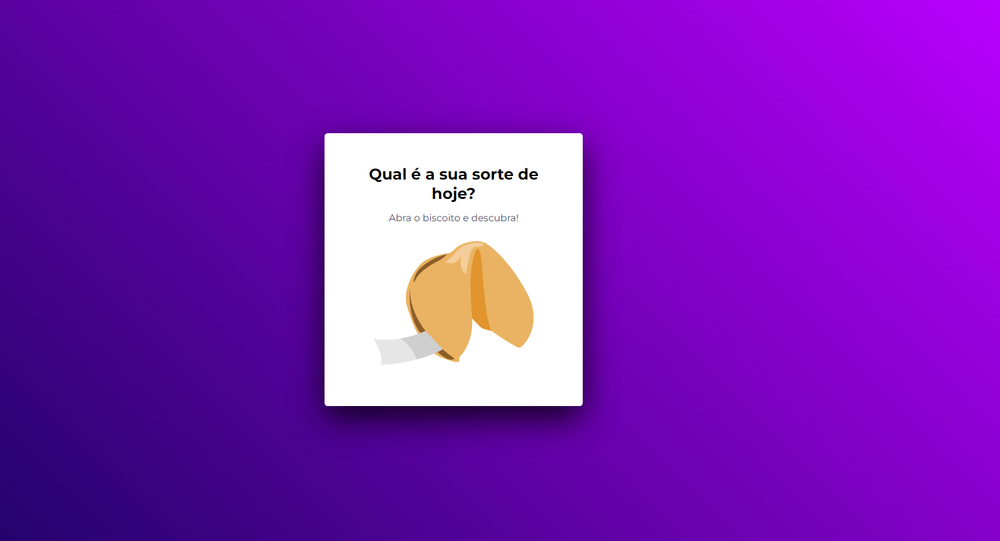
Biscoito da Sorte
O "Biscoito da Sorte" é um programa interativo que oferece aos usuários a experiência de abrir um biscoito da sorte e receber uma mensagem inspiradora, enigmática ou motivacional. Essa é uma versão virtual e divertida da tradição de abrir biscoitos da sorte após uma refeição chinesa.
-
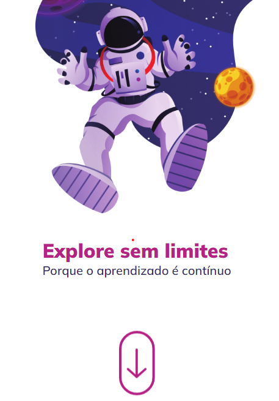Astronauta no Espaco
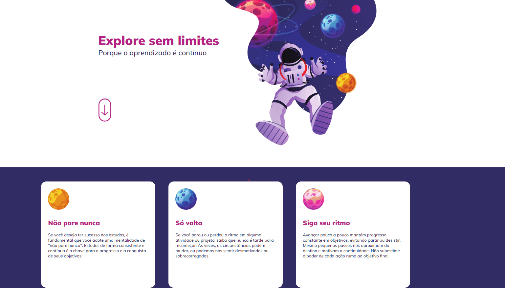
Espaco
O "Astronauta Interativo" é um site envolvente e educativo, criado por você, que leva os visitantes a uma jornada virtual pelo espaço sideral. Este site combina animações fascinantes com informações educativas sobre astronautas, o cosmos e as missões espaciais, proporcionando uma experiência única e envolvente.
-
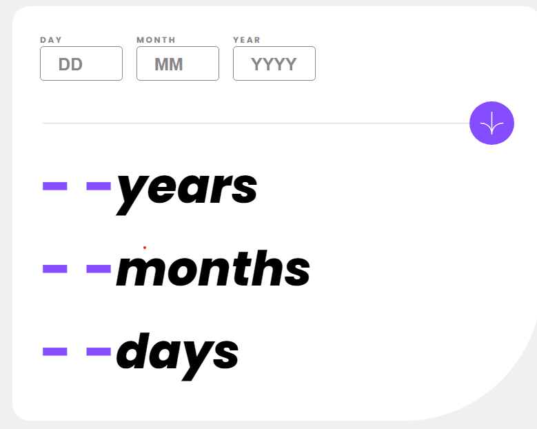Calculadora de idade
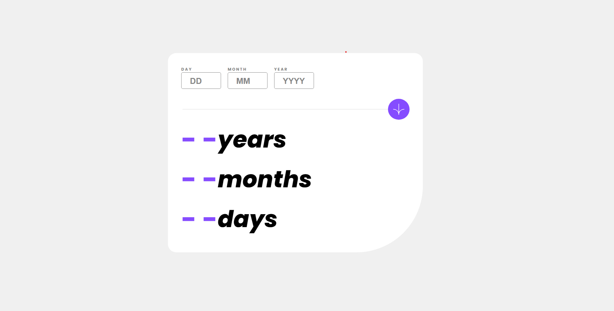
Calculador de tempo de vida
A "Calculadora de Tempo de Vida" é uma ferramenta online simples e útil que permite aos usuários descobrir quantos dias, meses e anos eles viveram até o momento. Este site fornece uma maneira fácil de refletir sobre o tempo que passou e apreciar a vida de uma forma única.
-
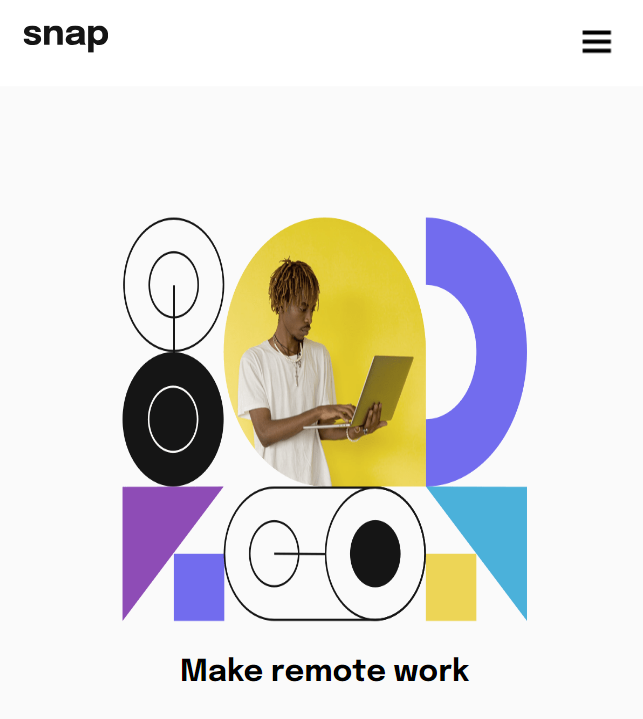Menu Duplo
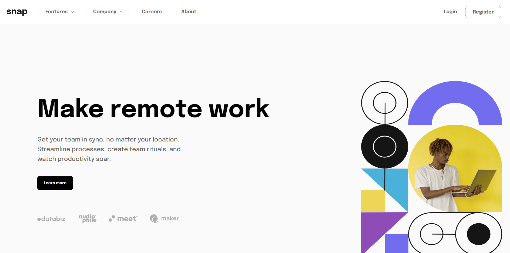
Menu Duplo
O "Menu Duplo Responsivo" é um site moderno e versátil que utiliza um design responsivo para garantir uma experiência de usuário fluida em dispositivos móveis e desktop. Ele apresenta um menu duplo que oferece fácil navegação e acesso rápido a diferentes seções do site.
-
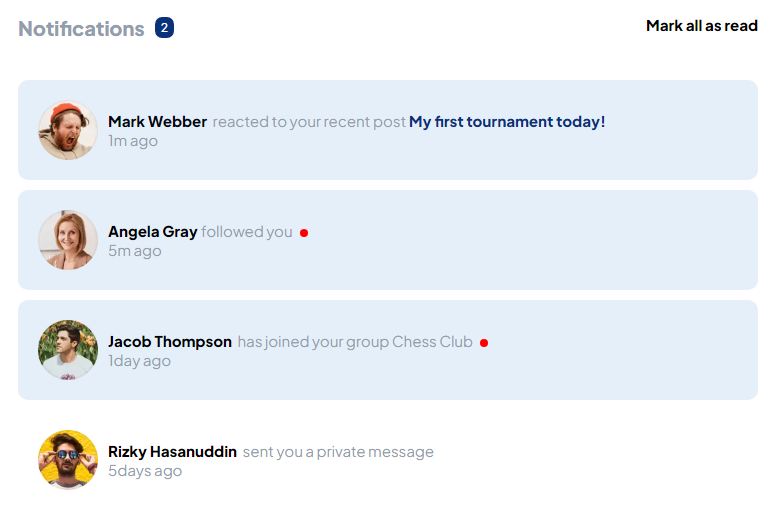Site de notificacoes
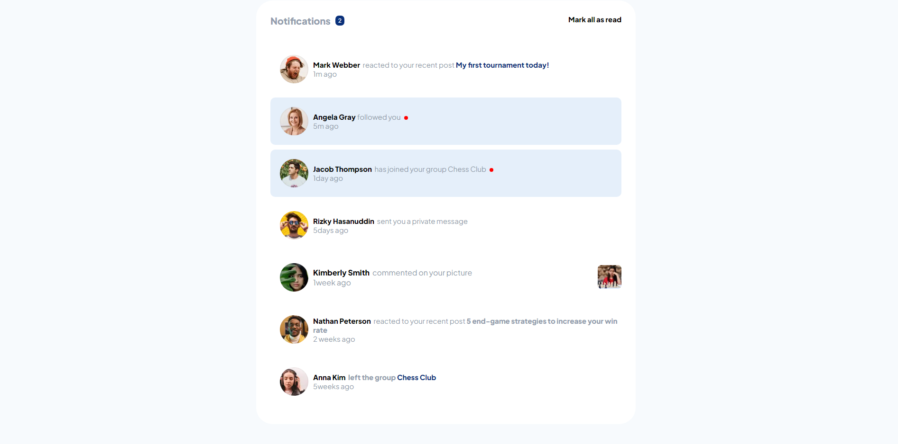
Site de notificacoes
O "Notificações" é um site dedicado a fornecer notificações instantâneas sobre eventos, atualizações e informações importantes para os usuários. Ele é projetado para manter os visitantes informados em tempo real, permitindo-lhes receber alertas sobre uma variedade de tópicos de interesse.
-
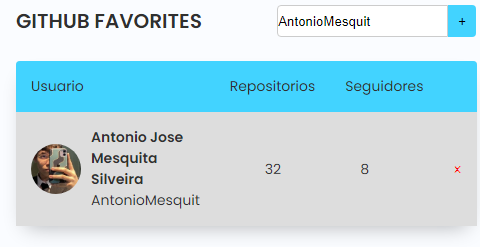Github Favoritos Usando API
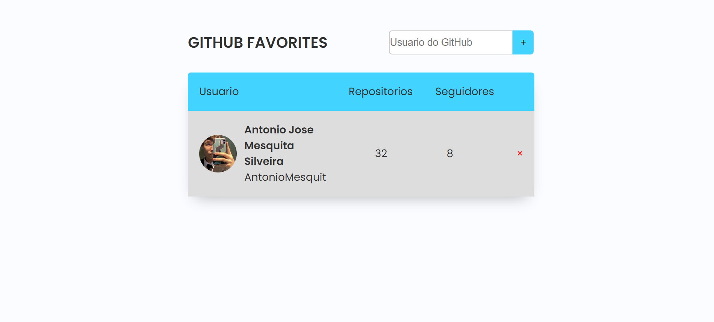
Github API
O "GitHub Favorites" é um site que permite aos usuários favoritar perfis do GitHub e acompanhar as atividades de seus desenvolvedores favoritos. Através da integração com a API do GitHub, os usuários podem descobrir, seguir e manter um registro de seus perfis favoritos de desenvolvedores e projetos.